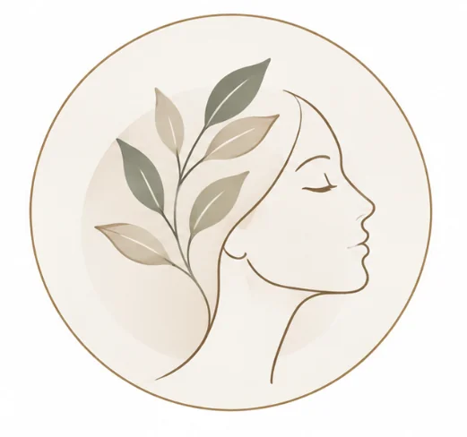
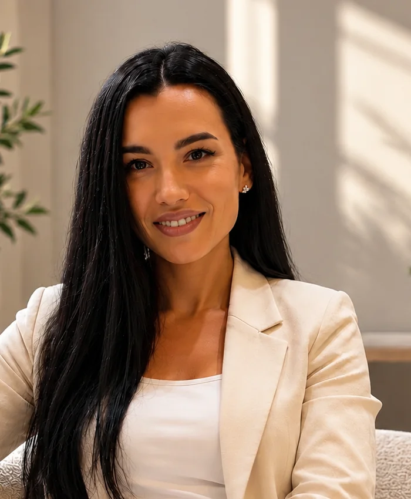
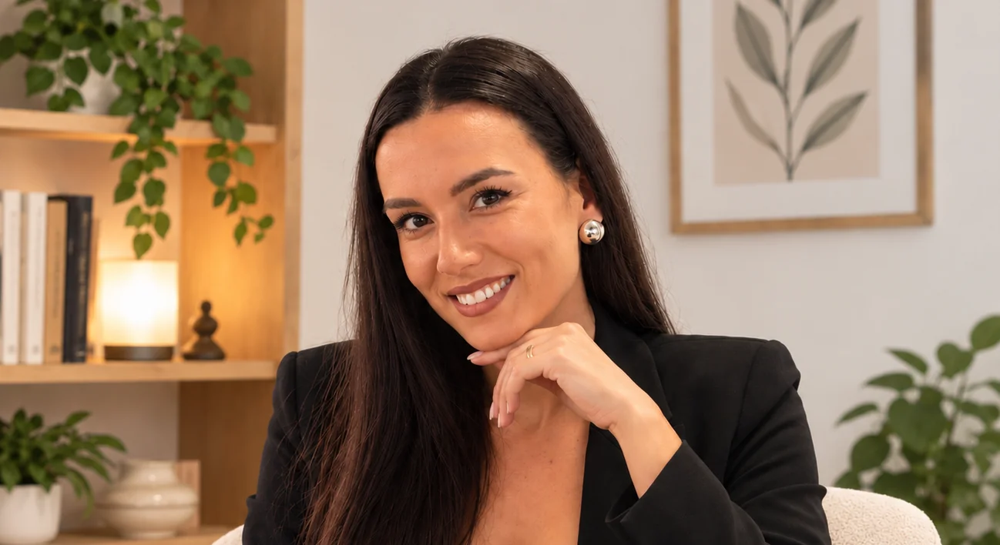
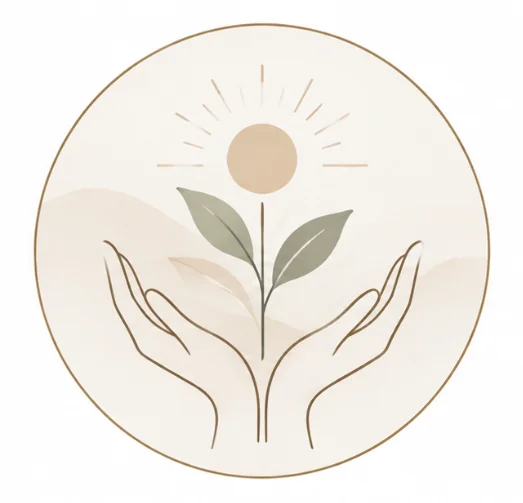
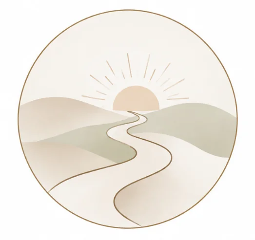
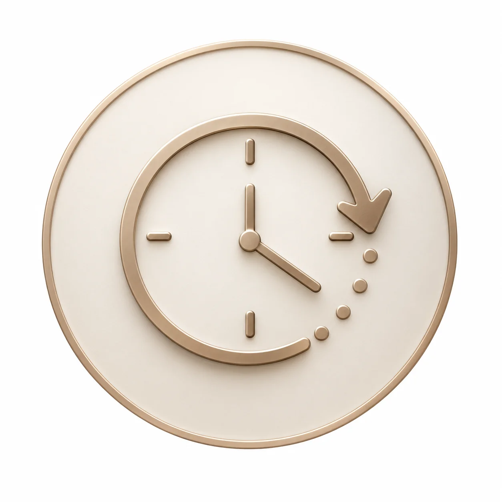
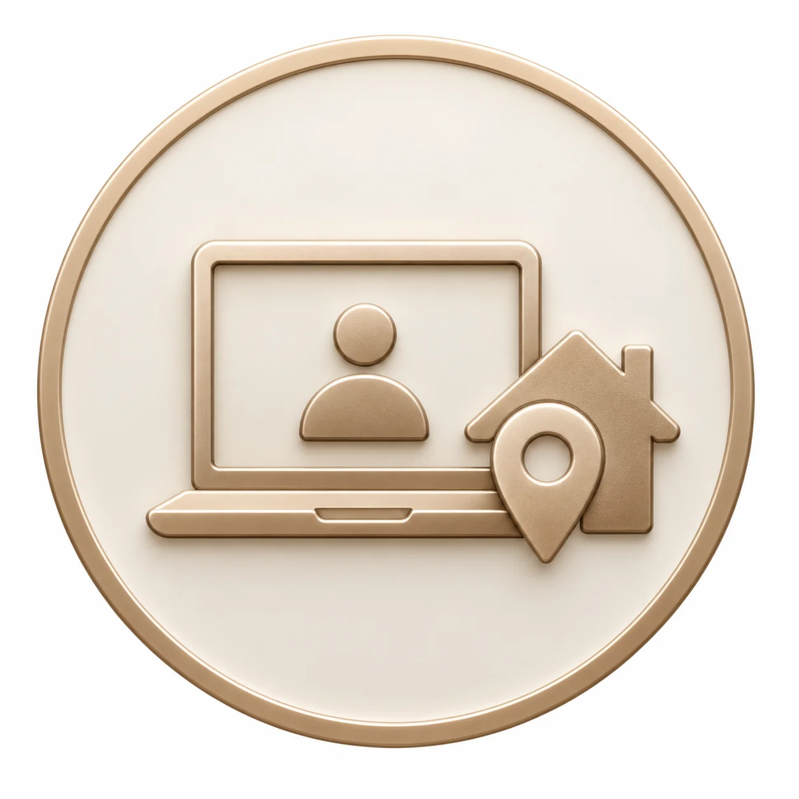
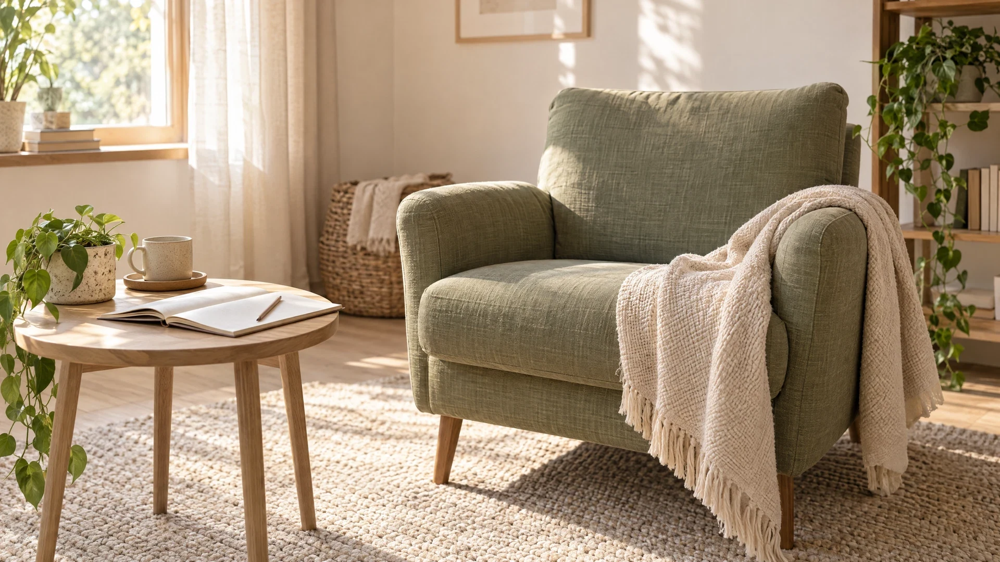
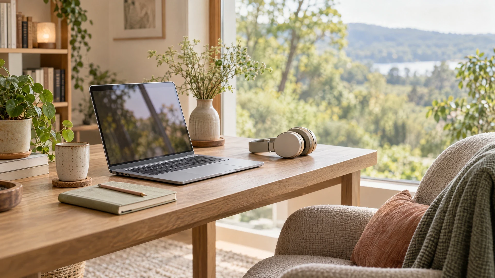
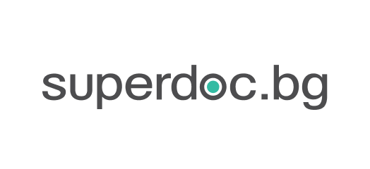

Моят подход
В работата си се съобразявам с вашето темпо и нужди и следвам принципите на професионалната конфиденциалност и етика.
Предлагам психологическа подкрепа, съобразена с вашето темпо и нужди — с пространство за повече яснота, вътрешна устойчивост и баланс.

Психолог · Магистър по приложна психология
Да бъдеш чут. Да бъдеш разбран.
Да имаш пространство да бъдеш себе си.

Изслушвам с внимание.ЗА МЕН
Казвам се Антонина Петрова. Имам бакалавърска степен по „Психология“ и магистърска степен по „Приложна психология“ от Пловдивския университет „Паисий Хилендарски“.
„Емпатията към хората и стремежът да разбирам техния вътрешен свят ме насочиха към психологията и я превърнаха в мое призвание.“
В работата си се съобразявам с вашето темпо и нужди и следвам принципите на професионалната конфиденциалност и етика.
Образование и квалификации
В работата си се съобразявам с вашето темпо и нужди и следвам принципите на професионалната конфиденциалност и етика.

Заедно търсим повече яснота, вътрешна устойчивост и баланс — стъпка по стъпка, във вашето темпо.

Създавам пространство за себепознание, личностно израстване и изграждане на увереност, което подкрепя емоционалното ви благополучие.
КОНСУЛТАЦИИ
Независимо къде се намирате —
в удобен за вас формат.
Провеждам онлайн консултации чрез интернет, най-често като видеоразговори.
Съобразявам начина на работа с вашите нужди и създавам пространство за спокоен и конфиденциален разговор.
Запази час в Superdoc Часът се потвърждава при записване.

Срещаме се онлайн чрез видеоразговор — от мястото, където се чувствате удобно.

Съобразявам формата с вас и оставям пространство за индивидуален разговор.

Обсъждаме предимствата и ограниченията на онлайн срещите, за да преценим заедно дали са подходящи за вас.
ОБРАЗОВАНИЕ
Академично образование и продължаващи професионални квалификации.
Разгледайте дипломите и квалификациитеПодредила съм обученията по потвърдените дати.
Пловдивски университет „Паисий Хилендарски“
Професионална квалификация: психолог, учител по психология.
Пловдивски университет „Паисий Хилендарски“
Професионална квалификация: психолог.
Софийски университет „Св. Климент Охридски“
30 академични часа · 21.10.2022 г. Свидетелство, серия СУ-039322, рег. № 38363.
Софийски университет „Св. Климент Охридски“
60 академични часа · 24.09.2024 г. Свидетелство, серия СУ-024690, рег. № 27675.
„ЕвроПро“ ЕООД
Удостоверение, рег. № 2188/28.10.2024 г.
Великотърновски университет „Св. св. Кирил и Методий“
Удостоверение за професионално обучение.
ДОКУМЕНТИ
Оригинални документи.
Натиснете за пълен размер.
ОТЗИВИ
Благодаря за доверието и споделените думи.
„Страхотен специалист и професионалист! Получих огромна подкрепа и помощ в адски труден за мен момент! Адмирации!“
„Изключителен професионалист с човешко отношение, внимание и разбиране! ❤️ Още от първата среща усещаш спокойствие, доверие и подкрепа. Подхожда с търпение, съпричастност и искрено желание да помогне. Чувстваш се изслушан, разбран и приет без осъждане. Препоръчвам от сърце на всеки, който има нужда от подкрепа и разбиране!“
„Прекрасен специалист с човешко отношение, разбиране и професионализъм! Изслушва с внимание и вдъхва спокойствие и доверие. Доверете и се !“
„От първата консултация бих казала, че се чувствам по-спокойна и че проблемите ми имат валидация.“Откъс
От първата консултация бих казала, че се чувствам по-спокойна и че проблемите ми имат валидация. Изключително съм доволна от сеанса, смятам че изслушва и дава правилните насоки, стига да ги следвам както ми е посочила. Усеща се, че е професионалист, защото излъчваше топлина и разбиране, а не арогантност и объркване както при други психолози които съм посещавала. Ще продължа да работя с Антонина Петрова и определено препоръчвам да и се доверитез Благодаря наистина за търпението, отделеното време и внимание към моите проблеми.
„Работата с Антонина Петрова беше най-добрата инвестиция в мен самата.“Откъс
Работата с Антонина Петрова беше най-добрата инвестиция в мен самата. Още от първия разговор тя успя да премахне напрежението и да ме предразположи да говоря напълно открито. Притежава рядък баланс между дълбока човечност,разбиране и изключителен професионализъм – не просто изслушва, а помага да разплетеш и най-сложните си мисли. След всяка среща имам усещане за лекота и с ясни, работещи стъпки за справяне. Ако търсите психолог, който наистина го е грижа и променя гледната точка, тя е правилният човек!
ПОЛЕЗНО
Няколко отговора, за да направите
първата стъпка по-спокойно.
Провеждам онлайн консултациите най-често чрез видеоразговор. Така можем да се срещнем независимо къде се намирате.
Онлайн консултацията продължава 60 минути. За да уточним удобен час, обадете ми се или използвайте линка за записване в Superdoc.
В работата си се ръководя от професионална конфиденциалност и етика. Поверителността има ограничения в случаите, предвидени от закона и приложимите професионални задължения.
Съобразявам онлайн формата с вашите нужди и заедно преценяваме нейните предимства и ограничения.
За записване можете да ми се обадите на 0895 707 248, да ми изпратите имейл или да използвате линка към профила ми в Superdoc. Запитването не е автоматично потвърждение на час.
КОНТАКТИ
Обадете ми се или ми пишете, за да уточним удобен час и формат за консултация.

Намерете ме в социалните мрежи


Онлайн консултации с предварително записване. Не е публикуван адрес за присъствени срещи.